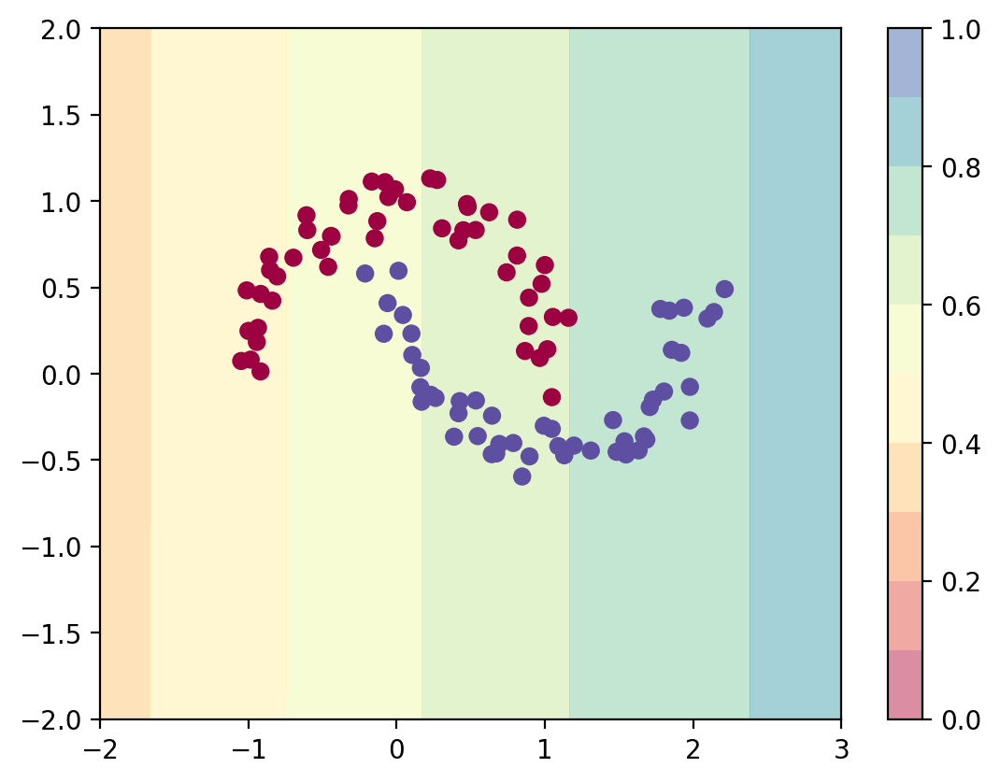
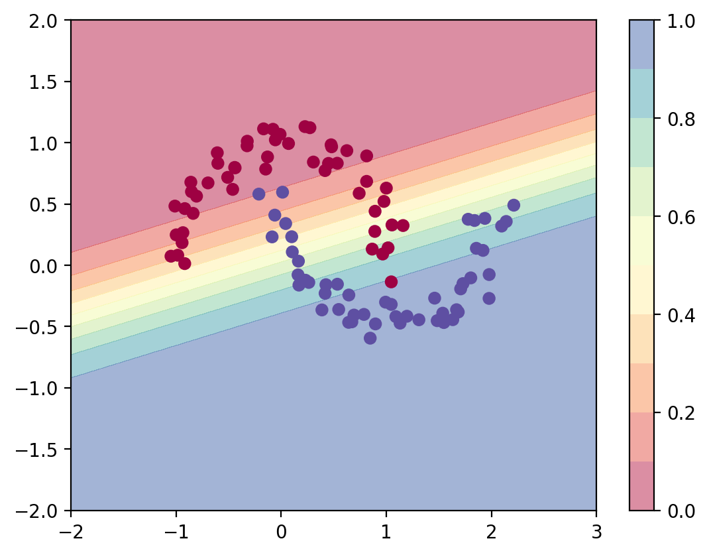
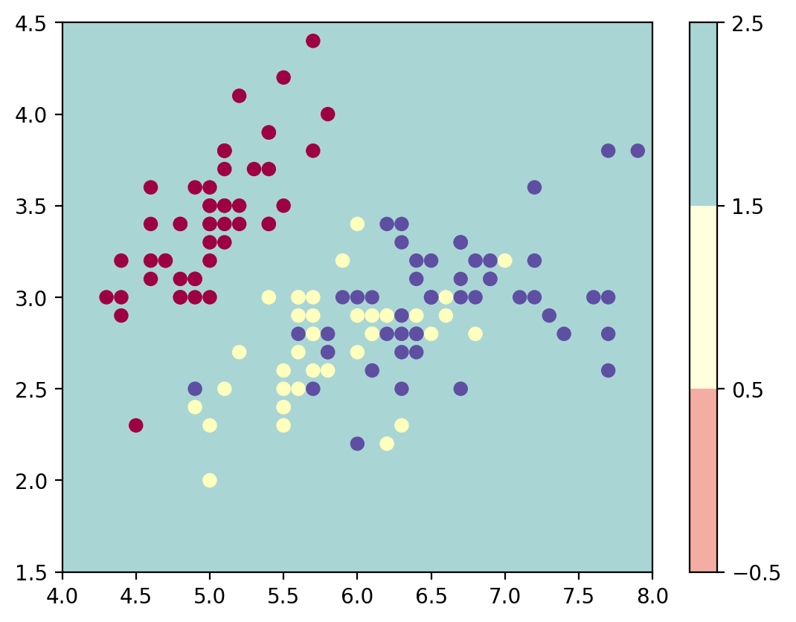
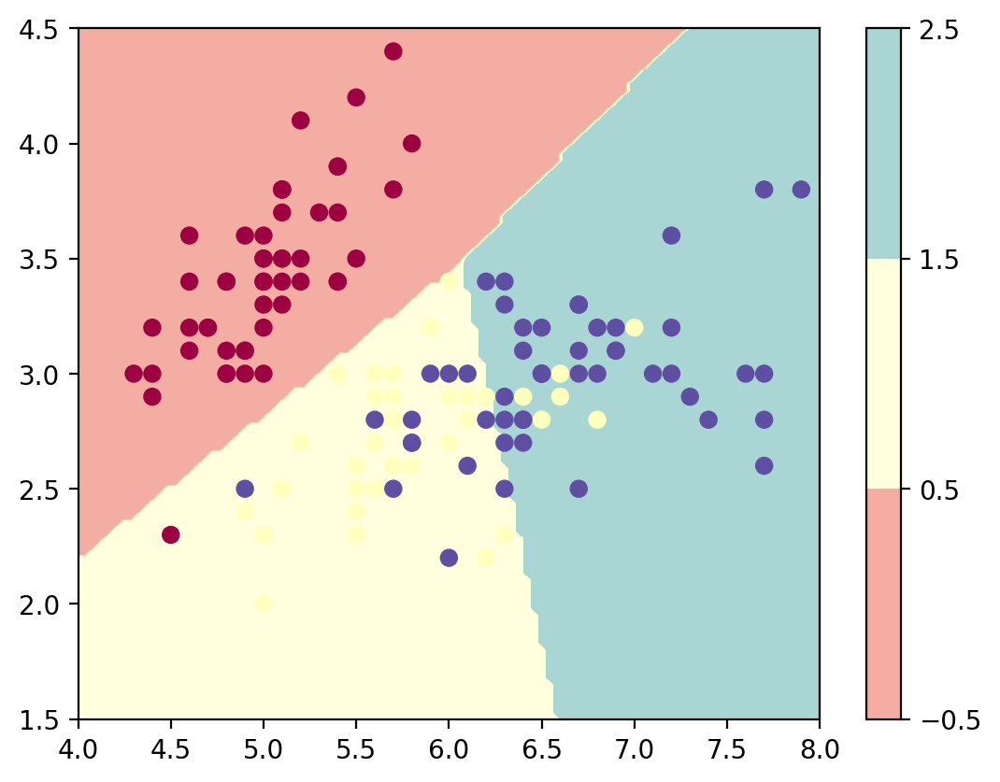

import numpy as np
import sklearn
import torch
import torch.nn as nn
import torch.nn.functional as F
import matplotlib.pyplot as plt
from latexify import *
%matplotlib inline
%config InlineBackend.figure_format = 'retina'Logistic Regression Torch
ML
class LogisticRegression(nn.Module):
def __init__(self, input_dim):
super(LogisticRegression, self).__init__()
self.linear = nn.Linear(input_dim, 1)
def forward(self, x):
logits = self.linear(x)
return logitsfrom sklearn.datasets import make_moonsX, y = make_moons(n_samples=100, noise=0.1)plt.scatter(X[:, 0], X[:, 1], c=y, cmap=plt.cm.Spectral)
log_reg = LogisticRegression(2)log_reg.linear.weight, log_reg.linear.bias(Parameter containing:
tensor([[ 4.4356e-01, -2.6494e-04]], requires_grad=True),
Parameter containing:
tensor([0.3300], requires_grad=True))log_reg(torch.tensor([1, 0.0]))tensor([0.7736], grad_fn=<AddBackward0>)# Predict with the model
def predict_plot_grid(model):
XX, YY = torch.meshgrid(torch.linspace(-2, 3, 100), torch.linspace(-2, 2, 100))
X_grid = torch.cat([XX.unsqueeze(-1), YY.unsqueeze(-1)], dim=-1)
logits = model(X_grid)
probs = torch.sigmoid(logits).reshape(100, 100)
plt.contourf(XX, YY, probs.detach().numpy(), levels=[0.0, 0.1, 0.2,0.3, 0.4,0.5, 0.6,0.7, 0.8,0.9, 1.0],
cmap=plt.cm.Spectral, alpha=0.5)
plt.colorbar()
plt.scatter(X[:, 0], X[:, 1], c=y, cmap=plt.cm.Spectral)
predict_plot_grid(log_reg)
/Users/nipun/mambaforge/lib/python3.10/site-packages/torch/functional.py:504: UserWarning: torch.meshgrid: in an upcoming release, it will be required to pass the indexing argument. (Triggered internally at /Users/runner/work/pytorch/pytorch/pytorch/aten/src/ATen/native/TensorShape.cpp:3484.)
return _VF.meshgrid(tensors, **kwargs) # type: ignore[attr-defined]
opt = torch.optim.Adam(log_reg.parameters(), lr=0.01)
converged = False
prev_loss = 1e8
i = 0
while not converged:
opt.zero_grad()
logits = log_reg(torch.tensor(X, dtype=torch.float32))
loss = nn.BCEWithLogitsLoss()(logits, torch.tensor(y, dtype=torch.float32).view(-1, 1))
loss.backward()
opt.step()
if i%10==0:
print(i, loss.item())
if np.abs(prev_loss - loss.item()) < 1e-5:
converged = True
prev_loss = loss.item()
i = i + 10 0.6356857419013977
10 0.594046413898468
20 0.5578780174255371
30 0.5273130536079407
40 0.5019742846488953
50 0.4811658561229706
60 0.46408790349960327
70 0.4499843716621399
80 0.43821147084236145
90 0.4282519817352295
100 0.41970330476760864
110 0.41225600242614746
120 0.4056738317012787
130 0.3997761607170105
140 0.39442503452301025
150 0.38951483368873596
160 0.38496479392051697
170 0.3807127773761749
180 0.3767113983631134
190 0.37292394042015076
200 0.3693225383758545
210 0.36588576436042786
220 0.36259689927101135
230 0.35944312810897827
240 0.3564144968986511
250 0.35350313782691956
260 0.3507026731967926
270 0.3480079174041748
280 0.34541457891464233
290 0.3429188132286072
300 0.3405173122882843
310 0.33820685744285583
320 0.3359847366809845
330 0.3338480293750763
340 0.33179405331611633
350 0.3298201858997345
360 0.3279236853122711
370 0.326102077960968
380 0.3243526518344879
390 0.3226730227470398
400 0.3210606873035431
410 0.3195130228996277
420 0.3180277347564697
430 0.3166024684906006
440 0.3152349293231964
450 0.3139227330684662
460 0.3126639127731323
470 0.31145623326301575
480 0.3102976083755493
490 0.3091861307621002
500 0.30811992287635803
510 0.30709704756736755
520 0.30611586570739746
530 0.3051745593547821
540 0.30427151918411255
550 0.30340519547462463
560 0.3025740385055542
570 0.30177661776542664
580 0.3010115325450897
590 0.3002774715423584
600 0.2995731830596924
610 0.298897385597229
620 0.29824888706207275
630 0.2976265847682953
640 0.29702943563461304
650 0.2964564263820648
660 0.2959064245223999
670 0.29537859559059143
680 0.29487207531929016
690 0.2943858802318573
700 0.29391926527023315
710 0.29347139596939087
720 0.29304152727127075
730 0.2926288843154907
740 0.29223284125328064
750 0.2918526232242584
760 0.2914877235889435
770 0.2911374270915985
780 0.29080113768577576
790 0.29047834873199463
800 0.29016852378845215
810 0.28987109661102295
820 0.28958556056022644
830 0.2893114984035492
840 0.289048433303833
850 0.28879591822624207
860 0.28855353593826294
870 0.2883208990097046
880 0.2880975604057312
890 0.2878831923007965
900 0.28767746686935425
910 0.28748005628585815
920 0.2872906029224396
930 0.28710871934890747
940 0.2869342267513275
950 0.28676676750183105
960 0.286606103181839
970 0.28645193576812744
980 0.28630396723747253
990 0.2861621081829071
1000 0.2860259413719177
1010 0.28589537739753723
1020 0.285770058631897
1030 0.28564995527267456
1040 0.28553470969200134
1050 0.28542420268058777
1060 0.28531819581985474
1070 0.2852165997028351predict_plot_grid(log_reg)
# Iris dataset
from sklearn.datasets import load_iris
iris = load_iris()X = iris.data
y = iris.targetplt.scatter(X[:, 0], X[:, 1], c=y, cmap=plt.cm.Spectral)
plt.xlabel('Sepal length')
plt.ylabel('Sepal width')Text(0, 0.5, 'Sepal width')class ThreeClassLogisticRegression(nn.Module):
def __init__(self, input_dim):
super(ThreeClassLogisticRegression, self).__init__()
self.linear1 = nn.Linear(input_dim, 1)
self.linear2 = nn.Linear(input_dim, 1)
self.linear3 = nn.Linear(input_dim, 1)
def forward(self, x):
logits1 = self.linear1(x) #x^T theta_1
logits2 = self.linear2(x) # x^T theta_2
logits3 = self.linear3(x) # x^T theta_3
return torch.cat([logits1, logits2, logits3], dim=-1)
class MultiClassLogisticRegression(nn.Module):
def __init__(self, input_dim, num_classes):
super(MultiClassLogisticRegression, self).__init__()
self.linear = nn.Linear(input_dim, num_classes)
def forward(self, x):
logits = self.linear(x)
return logitsmlr = ThreeClassLogisticRegression(2)X_tensor = torch.tensor(X, dtype=torch.float32)[:,:2]
y_tensor = torch.tensor(y, dtype=torch.long)mlr(X_tensor).shapetorch.Size([150, 3])mlr_efficient = MultiClassLogisticRegression(2, 3)
mlr_efficient(X_tensor).shapetorch.Size([150, 3])mlr_efficient(X_tensor[:5])tensor([[-1.0483, -4.8033, 1.9511],
[-1.0942, -4.4552, 1.9622],
[-0.9808, -4.4023, 1.8450],
[-0.9696, -4.2915, 1.8230],
[-0.9916, -4.7768, 1.8925]], grad_fn=<AddmmBackward0>)nn.Softmax(dim=-1)(mlr_efficient(X_tensor[:5]))tensor([[0.0474, 0.0011, 0.9515],
[0.0449, 0.0016, 0.9536],
[0.0558, 0.0018, 0.9423],
[0.0576, 0.0021, 0.9403],
[0.0529, 0.0012, 0.9459]], grad_fn=<SoftmaxBackward0>)
nn.Softmax(dim=-1)(mlr_efficient(X_tensor[:5])).sum(dim=-1)tensor([1.0000, 1.0000, 1.0000, 1.0000, 1.0000], grad_fn=<SumBackward1>)def plot_most_probable_class(model):
XX, YY = torch.meshgrid(torch.linspace(4, 8, 100), torch.linspace(1.5, 4.5, 100))
X_grid = torch.cat([XX.unsqueeze(-1), YY.unsqueeze(-1)], dim=-1)
logits = model(X_grid)
predicted_class = torch.argmax(logits, dim=-1)
plt.contourf(XX, YY, predicted_class.reshape(100, 100).detach().numpy(), levels=[-0.5, 0.5, 1.5, 2.5],
cmap=plt.cm.Spectral, alpha=0.5)
plt.colorbar()
plt.scatter(X[:, 0], X[:, 1], c=y, cmap=plt.cm.Spectral)
plot_most_probable_class(mlr_efficient)
logits = mlr_efficient(X_tensor)
nn.Softmax(dim=-1)(logits[:5])tensor([[0.0746, 0.8907, 0.0347],
[0.0938, 0.8669, 0.0393],
[0.0919, 0.8643, 0.0438],
[0.0976, 0.8560, 0.0464],
[0.0739, 0.8895, 0.0366]], grad_fn=<SoftmaxBackward0>)y_tensortensor([0, 0, 0, 0, 0, 0, 0, 0, 0, 0, 0, 0, 0, 0, 0, 0, 0, 0, 0, 0, 0, 0, 0, 0,
0, 0, 0, 0, 0, 0, 0, 0, 0, 0, 0, 0, 0, 0, 0, 0, 0, 0, 0, 0, 0, 0, 0, 0,
0, 0, 1, 1, 1, 1, 1, 1, 1, 1, 1, 1, 1, 1, 1, 1, 1, 1, 1, 1, 1, 1, 1, 1,
1, 1, 1, 1, 1, 1, 1, 1, 1, 1, 1, 1, 1, 1, 1, 1, 1, 1, 1, 1, 1, 1, 1, 1,
1, 1, 1, 1, 2, 2, 2, 2, 2, 2, 2, 2, 2, 2, 2, 2, 2, 2, 2, 2, 2, 2, 2, 2,
2, 2, 2, 2, 2, 2, 2, 2, 2, 2, 2, 2, 2, 2, 2, 2, 2, 2, 2, 2, 2, 2, 2, 2,
2, 2, 2, 2, 2, 2])opt = torch.optim.Adam(mlr_efficient.parameters(), lr=0.01)
converged = False
prev_loss = 1e8
i = 0
while not converged:
opt.zero_grad()
logits = mlr_efficient(X_tensor)
loss = F.cross_entropy(logits, y_tensor)
loss.backward()
opt.step()
if i%10==0:
print(i, loss.item())
if np.abs(prev_loss - loss.item()) < 1e-5:
converged = True
prev_loss = loss.item()
i = i + 10 3.512922763824463
10 2.396028518676758
20 1.7443147897720337
30 1.3343197107315063
40 1.0142916440963745
50 0.9684472680091858
60 0.9662931561470032
70 0.9421321749687195
80 0.932521641254425
90 0.9219393134117126
100 0.9116792678833008
110 0.9015797972679138
120 0.8915135860443115
130 0.8814629912376404
140 0.8714943528175354
150 0.8616196513175964
160 0.8518762588500977
170 0.84228515625
180 0.8328675031661987
190 0.8236393928527832
200 0.8146136999130249
210 0.8057998418807983
220 0.7972047328948975
230 0.7888327836990356
240 0.7806861400604248
250 0.7727659344673157
260 0.7650708556175232
270 0.7575994729995728
280 0.7503483891487122
290 0.7433139681816101
300 0.7364917397499084
310 0.7298766374588013
320 0.7234635949134827
330 0.7172466516494751
340 0.7112202048301697
350 0.7053780555725098
360 0.6997144222259521
370 0.6942230463027954
380 0.6888980865478516
390 0.6837335228919983
400 0.6787236928939819
410 0.673862636089325
420 0.6691449284553528
430 0.6645650863647461
440 0.6601179838180542
450 0.6557983160018921
460 0.6516013145446777
470 0.6475222110748291
480 0.6435563564300537
490 0.6396994590759277
500 0.6359471082687378
510 0.6322956085205078
520 0.628740668296814
530 0.6252787709236145
540 0.6219063997268677
550 0.6186199188232422
560 0.6154161095619202
570 0.6122919917106628
580 0.6092444062232971
590 0.6062706112861633
600 0.6033677458763123
610 0.6005332469940186
620 0.5977646708488464
630 0.5950595140457153
640 0.592415452003479
650 0.5898305177688599
660 0.5873023271560669
670 0.5848291516304016
680 0.5824088454246521
690 0.5800397992134094
700 0.5777201056480408
710 0.5754480957984924
720 0.5732222199440002
730 0.5710409283638
740 0.5689027905464172
750 0.5668062567710876
760 0.5647502541542053
770 0.5627332329750061
780 0.560754120349884
790 0.5588116645812988
800 0.5569047331809998
810 0.5550323128700256
820 0.553193211555481
830 0.5513865947723389
840 0.5496113300323486
850 0.547866702079773
860 0.5461516976356506
870 0.5444655418395996
880 0.5428073406219482
890 0.5411763787269592
900 0.5395719408988953
910 0.5379931926727295
920 0.5364394187927246
930 0.5349101424217224
940 0.5334045886993408
950 0.5319221615791321
960 0.5304622650146484
970 0.5290243625640869
980 0.5276078581809998
990 0.526212215423584
1000 0.5248369574546814
1010 0.5234816074371338
1020 0.5221456289291382
1030 0.5208286643028259
1040 0.5195301175117493
1050 0.5182497501373291
1060 0.5169870257377625
1070 0.5157415270805359
1080 0.5145129561424255
1090 0.5133009552955627
1100 0.5121050477027893
1110 0.5109249949455261
1120 0.5097604990005493
1130 0.5086110830307007
1140 0.5074764490127563
1150 0.5063564777374268
1160 0.5052507519721985
1170 0.5041589140892029
1180 0.5030808448791504
1190 0.5020161867141724
1200 0.5009647011756897
1210 0.4999260902404785
1220 0.49890023469924927
1230 0.4978867471218109
1240 0.4968855381011963
1250 0.49589625000953674
1260 0.4949187636375427
1270 0.49395284056663513
1280 0.4929983615875244
1290 0.49205493927001953
1300 0.49112263321876526
1310 0.4902009665966034
1320 0.4892899990081787
1330 0.48838943243026733
1340 0.4874991476535797
1350 0.48661890625953674
1360 0.4857485890388489
1370 0.48488810658454895
1380 0.48403722047805786
1390 0.4831957519054413
1400 0.4823637306690216
1410 0.4815407693386078
1420 0.48072683811187744
1430 0.47992178797721863
1440 0.47912561893463135
1450 0.47833800315856934
1460 0.4775589108467102
1470 0.4767882227897644
1480 0.47602584958076477
1490 0.4752714931964874
1500 0.4745253026485443
1510 0.47378697991371155
1520 0.473056435585022
1530 0.4723336398601532
1540 0.4716183543205261
1550 0.4709106385707855
1560 0.4702102541923523
1570 0.4695172607898712
1580 0.4688314199447632
1590 0.46815255284309387
1600 0.46748092770576477
1610 0.4668160378932953
1620 0.46615809202194214
1630 0.46550679206848145
1640 0.46486222743988037
1650 0.4642241895198822
1660 0.46359261870384216
1670 0.46296748518943787
1680 0.4623486399650574
1690 0.4617359936237335
1700 0.4611296057701111
1710 0.46052926778793335
1720 0.4599350094795227
1730 0.45934662222862244
1740 0.45876413583755493
1750 0.458187460899353
1760 0.4576164782047272
1770 0.45705124735832214
1780 0.4564915597438812
1790 0.45593738555908203
1800 0.45538878440856934
1810 0.45484548807144165
1820 0.454307496547699
1830 0.4537748694419861
1840 0.45324742794036865
1850 0.4527251124382019
1860 0.45220789313316345
1870 0.4516957998275757
1880 0.4511885941028595
1890 0.45068639516830444
1900 0.4501889944076538
1910 0.44969651103019714
1920 0.44920867681503296
1930 0.4487256407737732
1940 0.4482472240924835
1950 0.44777342677116394
1960 0.4473041296005249
1970 0.4468393921852112
1980 0.4463789761066437
1990 0.44592320919036865
2000 0.4454716444015503
2010 0.44502437114715576
2020 0.44458135962486267
2030 0.44414255023002625
2040 0.4437079429626465
2050 0.4432775378227234
2060 0.44285109639167786
2070 0.44242867827415466
2080 0.4420103430747986
2090 0.44159582257270813
2100 0.4411852955818176
2110 0.4407786428928375
2120 0.44037577509880066
2130 0.43997669219970703
2140 0.43958136439323425
2150 0.439189612865448
2160 0.43880173563957214
2170 0.43841731548309326
2180 0.4380365014076233
2190 0.43765926361083984
2200 0.43728557229042053
2210 0.43691518902778625
2220 0.4365483224391937
2230 0.4361847937107086
2240 0.43582475185394287
2250 0.435467928647995
2260 0.43511438369750977
2270 0.43476414680480957
2280 0.43441712856292725
2290 0.43407317996025085
2300 0.4337325096130371
2310 0.4333948791027069
2320 0.43306025862693787
2330 0.43272876739501953
2340 0.43240025639533997
2350 0.43207478523254395
2360 0.4317522644996643
2370 0.4314326047897339
2380 0.4311158359050751
2390 0.43080195784568787
2400 0.4304908812046051
2410 0.43018263578414917
2420 0.4298771023750305
2430 0.4295743405818939
2440 0.4292742908000946
2450 0.428976833820343
2460 0.4286821484565735
2470 0.4283899962902069
2480 0.42810049653053284
2490 0.4278135299682617
2500 0.4275290369987488
2510 0.42724716663360596
2520 0.42696771025657654
2530 0.4266907274723053
2540 0.42641615867614746
2550 0.426144003868103
2560 0.4258742332458496
2570 0.4256068468093872
2580 0.42534172534942627
2590 0.42507895827293396
2600 0.4248184561729431
2610 0.4245601296424866
2620 0.4243040978908539
2630 0.42405030131340027
2640 0.42379865050315857
2650 0.4235491156578064
2660 0.4233017563819885
2670 0.4230565130710602
2680 0.4228133261203766
2690 0.42257219552993774
2700 0.42233312129974365
2710 0.42209604382514954
2720 0.42186105251312256
2730 0.421627938747406
2740 0.42139682173728943
2750 0.42116764187812805
2760 0.4209402799606323
2770 0.4207148849964142
2780 0.42049136757850647
2790 0.420269638299942
2800 0.4200498163700104
2810 0.4198317527770996
2820 0.4196154773235321
2830 0.4194009304046631
2840 0.4191882312297821
2850 0.41897717118263245
2860 0.4187678396701813
2870 0.4185602068901062
2880 0.41835424304008484
2890 0.4181499481201172
2900 0.4179472029209137
2910 0.4177462160587311
2920 0.41754665970802307
2930 0.41734886169433594
2940 0.4171524941921234
2950 0.41695767641067505
2960 0.41676443815231323
2970 0.4165726900100708
2980 0.41638243198394775
2990 0.4161936044692993
3000 0.4160062074661255
3010 0.41582033038139343
3020 0.415635883808136
3030 0.41545283794403076
3040 0.415271133184433
3050 0.4150908291339874
3060 0.4149118959903717
3070 0.41473427414894104
3080 0.4145580530166626
3090 0.4143831133842468
3100 0.4142094552516937
3110 0.4140370488166809
3120 0.41386595368385315
3130 0.4136960804462433
3140 0.4135274887084961
3150 0.4133600890636444
3160 0.413193941116333
3170 0.4130289852619171
3180 0.4128651022911072
3190 0.4127025008201599
3200 0.4125410318374634
3210 0.4123806655406952
3220 0.4122214615345001
3230 0.4120633602142334
3240 0.411906361579895
3250 0.4117504358291626
3260 0.4115956723690033
3270 0.4114418923854828
3280 0.41128915548324585
3290 0.4111374616622925
3300 0.4109868109226227
3310 0.41083717346191406
3320 0.41068848967552185
3330 0.4105408489704132
3340 0.41039419174194336
3350 0.41024842858314514
3360 0.4101036787033081
3370 0.4099598526954651
3380 0.4098169803619385
3390 0.4096750020980835
3400 0.40953394770622253
3410 0.4093937873840332
3420 0.4092545211315155
3430 0.40911605954170227
3440 0.4089786112308502
3450 0.4088418781757355
3460 0.40870606899261475
3470 0.4085709750652313
3480 0.4084368348121643
3490 0.40830346941947937
3500 0.4081708788871765
3510 0.4080391824245453
3520 0.4079081416130066
3530 0.40777796506881714
3540 0.4076485335826874
3550 0.4075198173522949
3560 0.40739184617996216
3570 0.4072646200656891
3580 0.40713822841644287
3590 0.4070124626159668
3600 0.40688738226890564
3610 0.4067629873752594
3620 0.4066393971443176
3630 0.406516432762146
3640 0.4063941240310669
3650 0.4062725305557251
3660 0.40615156292915344
3670 0.4060312509536743
3680 0.40591153502464294
3690 0.4057925343513489
3700 0.4056740999221802
3710 0.405556321144104
3720 0.4054391384124756
3730 0.4053225815296173
3740 0.4052066206932068
3750 0.405091255903244
3760 0.4049764573574066
3770 0.4048621952533722
3780 0.40474849939346313
3790 0.4046354293823242
3800 0.4045228958129883
3810 0.40441086888313293
3820 0.40429946780204773
3830 0.40418851375579834
3840 0.4040781259536743
3850 0.4039682447910309
3860 0.40385884046554565
3870 0.4037500321865082
3880 0.4036416709423065
3890 0.40353381633758545
3900 0.40342646837234497
3910 0.4033195674419403
3920 0.40321317315101624
3930 0.40310725569725037
3940 0.40300169587135315
3950 0.4028966724872589
3960 0.40279218554496765
3970 0.40268802642822266
3980 0.40258437395095825
3990 0.40248122811317444
4000 0.4023783504962921
4010 0.40227600932121277
4020 0.40217405557632446
4030 0.4020724892616272
4040 0.4019714295864105
4050 0.4018706679344177mlr_efficient(X_tensor[:5])tensor([[ 3.5738, -1.9346, -3.4869],
[ 1.4138, -0.7382, -2.8186],
[ 3.6912, -1.3615, -3.6789],
[ 3.5621, -1.1532, -3.6723],
[ 4.7125, -2.2463, -3.9170]], grad_fn=<AddmmBackward0>)pred = F.softmax(mlr_efficient(X_tensor), dim=-1).detach().numpy()
pd.DataFrame(pred)| 0 | 1 | 2 | |
|---|---|---|---|
| 0 | 0.995113 | 0.004033 | 0.000854 |
| 1 | 0.884354 | 0.102808 | 0.012838 |
| 2 | 0.993027 | 0.006347 | 0.000625 |
| 3 | 0.990414 | 0.008871 | 0.000714 |
| 4 | 0.998872 | 0.000949 | 0.000179 |
| ... | ... | ... | ... |
| 145 | 0.000119 | 0.309663 | 0.690218 |
| 146 | 0.000021 | 0.511706 | 0.488273 |
| 147 | 0.000446 | 0.381773 | 0.617781 |
| 148 | 0.092207 | 0.416003 | 0.491790 |
| 149 | 0.019944 | 0.605274 | 0.374782 |
150 rows × 3 columns
import pandas as pddf = pd.DataFrame(pred, columns=iris.target_names)
df["GT"] = iris.target
df| setosa | versicolor | virginica | GT | |
|---|---|---|---|---|
| 0 | 0.995113 | 0.004033 | 0.000854 | 0 |
| 1 | 0.884354 | 0.102808 | 0.012838 | 0 |
| 2 | 0.993027 | 0.006347 | 0.000625 | 0 |
| 3 | 0.990414 | 0.008871 | 0.000714 | 0 |
| 4 | 0.998872 | 0.000949 | 0.000179 | 0 |
| ... | ... | ... | ... | ... |
| 145 | 0.000119 | 0.309663 | 0.690218 | 2 |
| 146 | 0.000021 | 0.511706 | 0.488273 | 2 |
| 147 | 0.000446 | 0.381773 | 0.617781 | 2 |
| 148 | 0.092207 | 0.416003 | 0.491790 | 2 |
| 149 | 0.019944 | 0.605274 | 0.374782 | 2 |
150 rows × 4 columns
# Find prediction
y_pred = pred.argmax(axis=-1)
df["Predicted Class"] = y_preddf| setosa | versicolor | virginica | GT | Predicted Class | |
|---|---|---|---|---|---|
| 0 | 0.995113 | 0.004033 | 0.000854 | 0 | 0 |
| 1 | 0.884354 | 0.102808 | 0.012838 | 0 | 0 |
| 2 | 0.993027 | 0.006347 | 0.000625 | 0 | 0 |
| 3 | 0.990414 | 0.008871 | 0.000714 | 0 | 0 |
| 4 | 0.998872 | 0.000949 | 0.000179 | 0 | 0 |
| ... | ... | ... | ... | ... | ... |
| 145 | 0.000119 | 0.309663 | 0.690218 | 2 | 2 |
| 146 | 0.000021 | 0.511706 | 0.488273 | 2 | 1 |
| 147 | 0.000446 | 0.381773 | 0.617781 | 2 | 2 |
| 148 | 0.092207 | 0.416003 | 0.491790 | 2 | 2 |
| 149 | 0.019944 | 0.605274 | 0.374782 | 2 | 1 |
150 rows × 5 columns
# Accuracy
(y_pred == iris.target).mean()0.8266666666666667plot_most_probable_class(mlr_efficient)
# Add more features like x^2, xy, y^2
X = iris.data
y = iris.target
X = np.concatenate([X, X**2, X[:, [0]]*X[:, [1]], X[:, [1]]**2], axis=-1)
X_tensor = torch.tensor(X, dtype=torch.float32)
mlr_efficient = MultiClassLogisticRegression(10, 3)
opt = torch.optim.Adam(mlr_efficient.parameters(), lr=0.01)
converged = False
prev_loss = 1e8
i = 0
while not converged:
opt.zero_grad()
logits = mlr_efficient(X_tensor)
loss = F.cross_entropy(logits, y_tensor)
loss.backward()
opt.step()
if i%10==0:
print(i, loss.item())
if np.abs(prev_loss - loss.item()) < 1e-5:
converged = True
prev_loss = loss.item()
i = i + 1
0 14.176704406738281
10 3.6011011600494385
20 2.2202305793762207
30 1.1102030277252197
40 0.7572755217552185
50 0.5920207500457764
60 0.4846627414226532
70 0.42518150806427
80 0.3840698003768921
90 0.3463784456253052
100 0.3159296214580536
110 0.29051730036735535
120 0.26877450942993164
130 0.25018322467803955
140 0.23417198657989502
150 0.22026310861110687
160 0.208110511302948
170 0.19741976261138916
180 0.1879548579454422
190 0.17952509224414825
200 0.1719748079776764
210 0.16517652571201324
220 0.1590253710746765
230 0.15343450009822845
240 0.1483314335346222
250 0.14365535974502563
260 0.1393551379442215
270 0.13538718223571777
280 0.1317143738269806
290 0.1283048838376999
300 0.12513123452663422
310 0.12216956913471222
320 0.11939921230077744
330 0.11680207401514053
340 0.11436217278242111
350 0.11206554621458054
360 0.10989975929260254
370 0.10785383731126785
380 0.10591793060302734
390 0.10408329963684082
400 0.10234205424785614
410 0.100687175989151
420 0.09911229461431503
430 0.09761164337396622
440 0.0961800143122673
450 0.09481271356344223
460 0.0935053601861
470 0.09225409477949142
480 0.09105528891086578
490 0.08990570902824402
500 0.08880224823951721
510 0.08774220943450928
520 0.08672299981117249
530 0.0857422798871994
540 0.08479787409305573
550 0.08388775587081909
560 0.08301006257534027
570 0.08216307312250137
580 0.08134514838457108
590 0.08055480569601059
600 0.07979065924882889
610 0.07905137538909912
620 0.07833576202392578
630 0.07764269411563873
640 0.07697104662656784
650 0.0763198509812355
660 0.0756881982088089
670 0.0750751718878746
680 0.07447994500398636
690 0.07390176504850388
700 0.07333985716104507
710 0.07279356569051743
720 0.07226220518350601
730 0.07174517214298248
740 0.07124187797307968
750 0.07075177878141403
760 0.07027437537908554
770 0.06980910897254944
780 0.0693555623292923
790 0.06891326606273651
800 0.06848182529211044
810 0.06806080043315887
820 0.06764982640743256
830 0.06724855303764343
840 0.06685658544301987
850 0.06647367775440216
860 0.06609942764043808
870 0.06573358923196793
880 0.06537587195634842
890 0.06502598524093628
900 0.06468366086483002
910 0.06434867531061172
920 0.0640207827091217
930 0.06369974464178085
940 0.06338536739349365
950 0.0630773976445198
960 0.06277567893266678
970 0.06247999891638756
980 0.062190182507038116
990 0.061906032264232635
1000 0.06162742152810097
1010 0.0613541342318058
1020 0.06108605116605759
1030 0.060823000967502594
1040 0.06056485325098038
1050 0.060311462730169296
1060 0.060062702745199203
1070 0.059818439185619354
1080 0.0595785453915596
1090 0.05934292450547218
1100 0.059111423790454865
1110 0.05888395383954048
1120 0.05866041034460068
1130 0.058440666645765305
1140 0.05822468549013138
1150 0.05801228806376457
1160 0.0578034408390522
1170 0.05759802460670471
1180 0.057395968586206436
1190 0.057197194546461105
1200 0.05700158327817917
1210 0.05680910125374794
1220 0.056619662791490555
1230 0.056433189660310745
1240 0.05624958500266075
1250 0.05606883391737938
1260 0.055890828371047974
1270 0.05571554973721504
1280 0.05554285645484924
1290 0.05537276715040207
1300 0.05520516261458397
1310 0.05504004284739494
1320 0.05487731471657753
1330 0.05471692979335785
1340 0.054558854550123215
1350 0.05440303310751915
1360 0.054249413311481476
1370 0.05409794673323631
1380 0.05394855514168739
1390 0.05380124971270561
1400 0.053655948489904404
1410 0.05351264774799347
1420 0.05337127670645714
1430 0.05323179438710213
1440 0.05309417098760605
1450 0.052958354353904724
1460 0.05282432958483696
1470 0.052692074328660965
1480 0.052561502903699875
1490 0.05243263393640518
1500 0.05230540409684181
1510 0.05217977985739708
1520 0.052055761218070984
1530 0.05193326622247696
1540 0.051812317222356796
1550 0.051692862063646317
1560 0.05157487466931343
1570 0.051458317786455154
1580 0.0513431578874588
1590 0.05122942104935646
1600 0.05111704766750336
1610 0.0510060079395771
1620 0.05089626833796501
1630 0.05078782141208649
1640 0.05068064481019974
1650 0.050574686378240585
1660 0.05047000199556351
1670 0.05036647617816925
1680 0.050264161080121994
1690 0.05016299709677696# Accuracy
pred = F.softmax(mlr_efficient(X_tensor), dim=-1).detach().numpy()
y_pred = pred.argmax(axis=-1)
(y_pred == iris.target).mean()0.9866666666666667